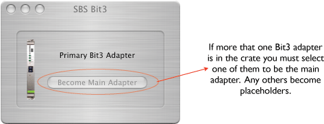

The SBS Bit 3 adapter icon looks like this in the catalog and the VME Crate: 

The SBS Bit 3 adapter object is really just a placeholder that provides a link from the VME crate object to the one of the host computer's PCI controllers (i.e. a 620 Controller). You can place more than one Bit 3 adapter into a VME crate, but only one of them can be designated as the main adapter.
The jumpers on the Bit 3 board must set up correctly for VME accesses to work. If you are getting VME exceptions during read/write operations, it may be that the jumpers on the board are incorrect. The jumper setting for using the Bit 3 board without an eCPU are as follows:
The jumper setting for using the Bit 3 board with an eCPU and dual port memory are as follows: